Podcast
Honored to be a guest speaker on these inspirational and educational podcasts for women by women. I talk to industry leaders about health, fitness, mindset, and achieving your best self!
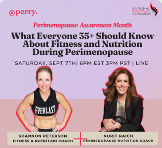
Dropping so many gems with my fellow peri-meno expert on all things fitness and nutrition for women experiencing hormonal changes. Weight gain and lethargy are not inevitable. We give you the tips and tools to feel your best at any age.
Listen Here
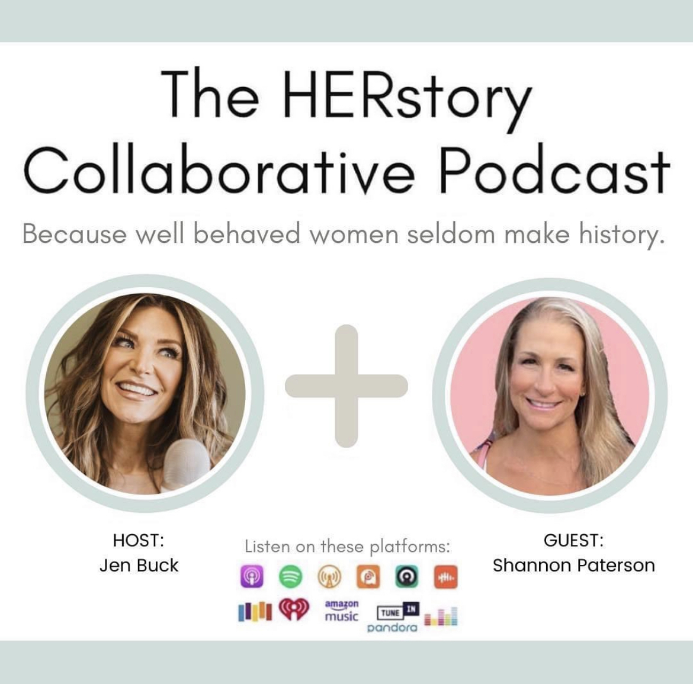
Super proud of this podcast interview with rockstar Entrepreneur & motivational speaker Jen Buck. This is literally one of my favorites! We talk about all things fitness, motivation, empowerment, mindset and women inspiring women! Need a dose of motivation?
Listen Here
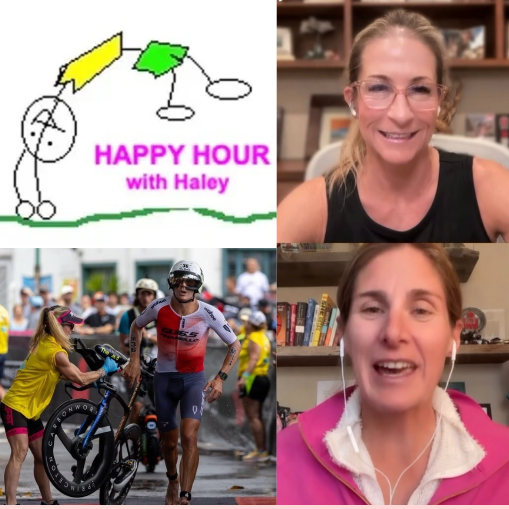
Pro Triathlete, Haley Chura, wants to talk about the viral Instagram pro-triathlete Cam Wurf posted highlighting my muscular arms. Pretty awesome for a 54 year old women to be called out by some of the best athletes in the world. Haley and I talk about the importance of strength training for women as it pertains to muscle, bone, and overall health and how to do it effectively & safely.
Listen Here
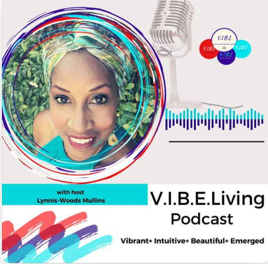
On Lynnis Woods-Mullins podcast, we discuss the misconception that "going hard" is the only way to get in shape effectively. That might be true for some people, but for women over 40, this is not necessarily the case. Surprisingly, studies have shown that getting in shape after 40 is less about "going hard" but more about low-impact movement and strength training with consistency.
Listen Here
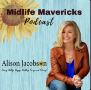
Midlife Mavericks is for women who are committed to living their best life in their 50's and beyond - confidently, abundantly and joyfully! Host & motivational speaker, author and coach Alison Jacobson speaks to amazing women doing incredible things in midlife and experts who are helping women in midlife live their best lives. We talk - top fitness tips for women in perimenopause and beyond.
Listen Here
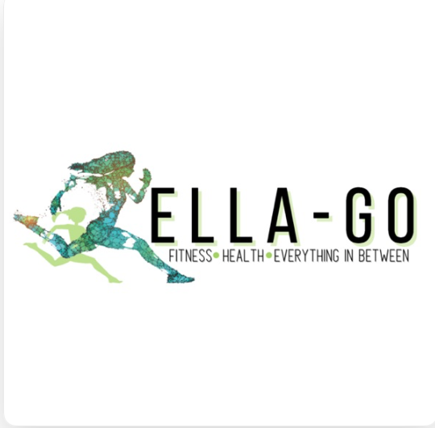
Lisa DeLugo is a running & life coach dedicated to helping women and her podcast highlights experts in the fitness industry. Lisa and I cover a lot in this interview!
Listen Here
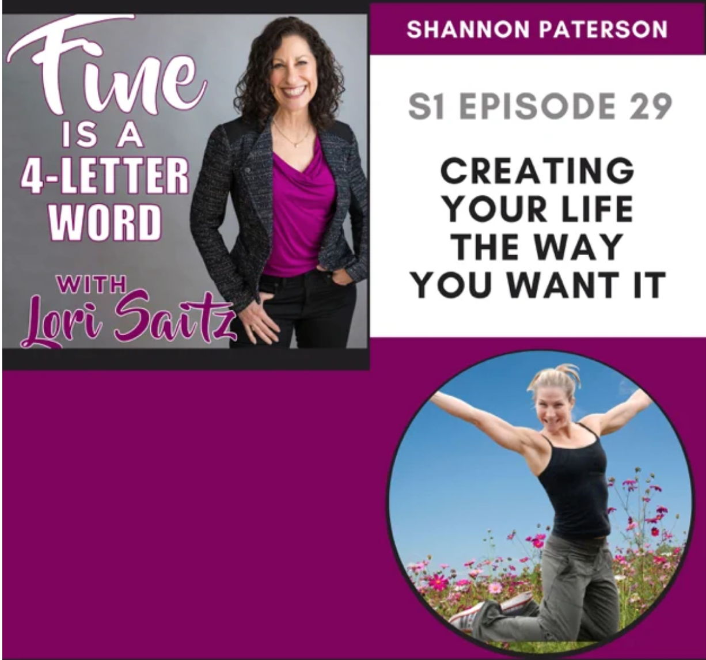
Lori Saitz's podcast, "Fine is a 4-Letter Word" is She is helping change the narrative for midlife women. That's okay when everything is't "fine". REAL conversations about REAL life for women.
Listen Here
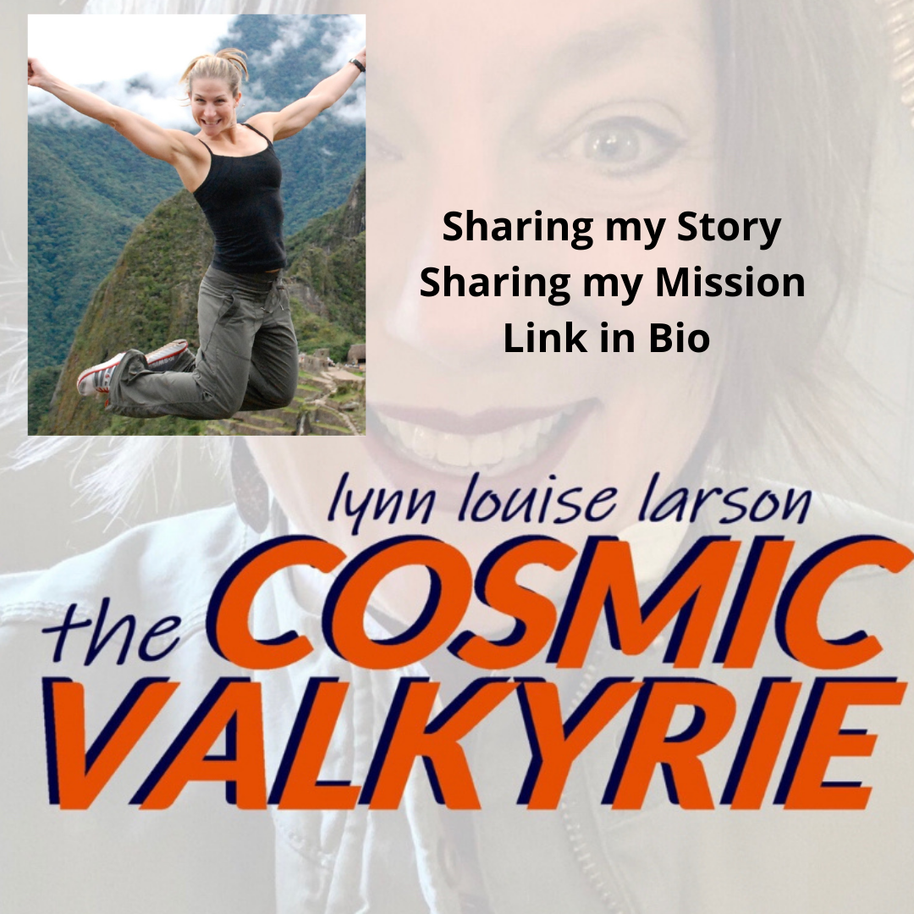
Lynn Louise has helped women from all over the world step into the Focused Visionary they came to earth to be! Honored to be a part of her Warrior Wednesday series celebrating women that are empowering themselves and other to Live their Truth!
Listen Here
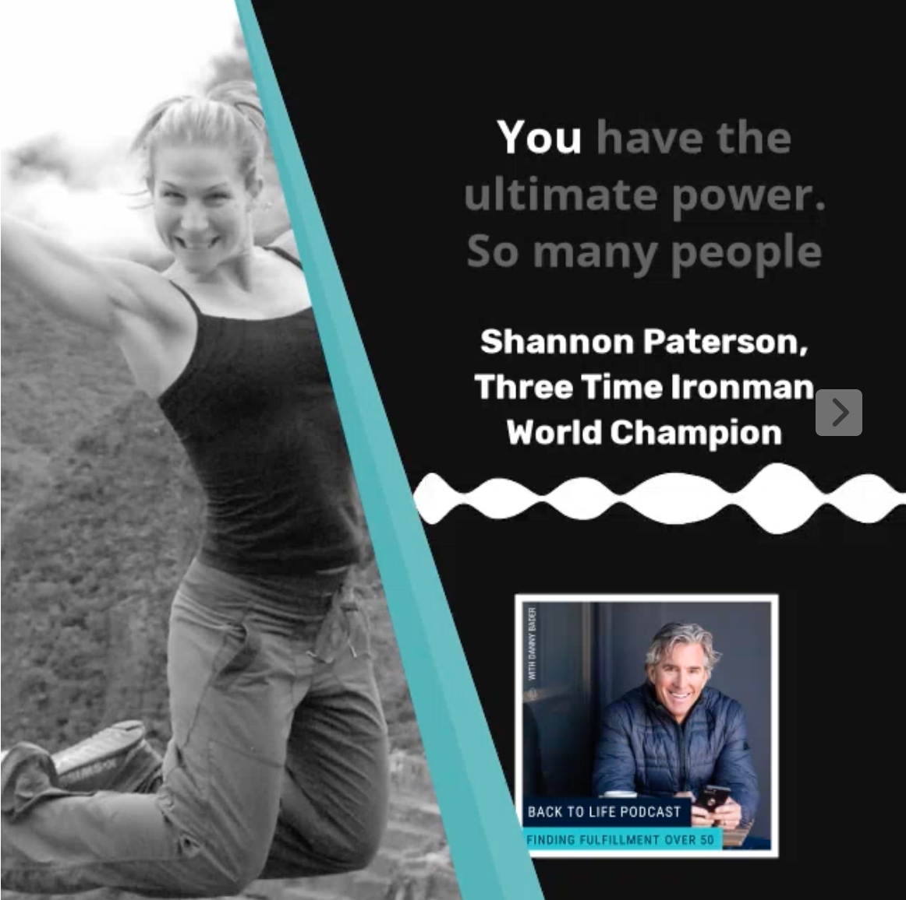
Are you feeling stuck? Contemplating making a change? Know there's more to life but not sure what it is or how to get it? I feel you Sis! Proud to be a guest on this fabulous podcast “Back to Life: Finding Fulfillment After 50” with Danny Bader. We talked about the 3 A’s for making impactful choices for a more joyous life.
Listen Here
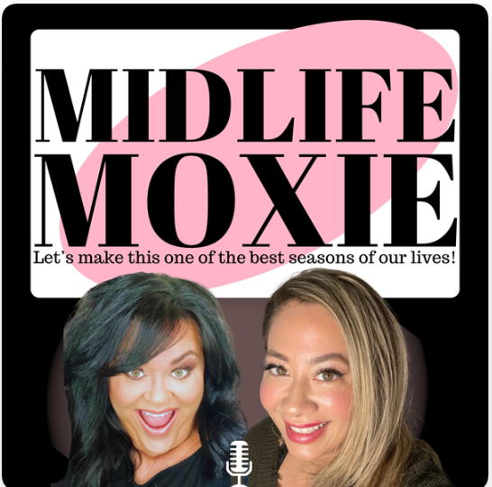
Gail Scott & Christina Massey are making Midlife the best season of life! Come listen to my Fitness over 40 tips on my podcast interview with the amazing ladies from Midlife Moxie. We talk fitness, health, nutrition, sleep, recovery, stress reduction, mindset & holistic wellness. Listen to all of their fabulous interviews with real women inspiring, supporting, and often laughing together. Buckle up! This one is a wild ride!
Listen Here
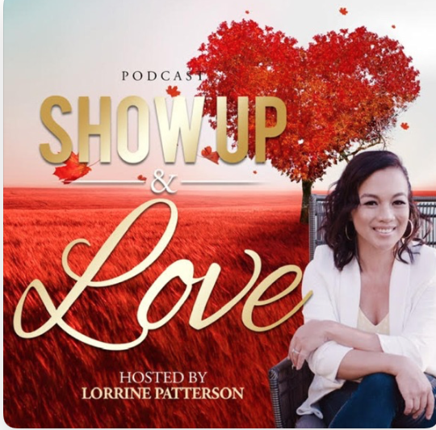
Best Selling Author and Founder/CEO of a 501(c)3 nonprofit, Lorrine Patterson, has dedicated her podcast to sharing stores of overcoming challenges. We talk about:
- How physical health is connected to mental health and wellness
- My learnings as a 3X Ironman World Championship Triathlete
- What it means to be "A Love Radiator"
Listen Here